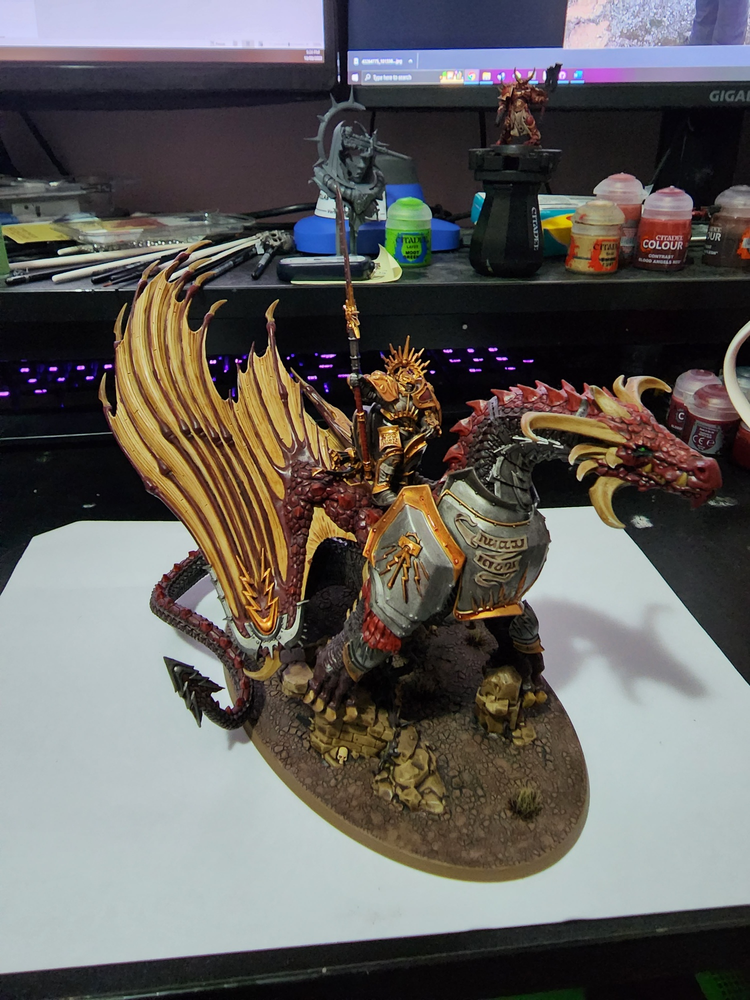

Name: Derek Gray Student Number: S3813417 Student Email Address: S3813417@student.rmit.edu.au
Hi, I’m Derek and you’ve decided to have a look at my profile. I was born and raised in Sydney Australia, with a strong influence from my Italian heritage.One of my major regrets from my childhood is not taking the time to learn to speak Italian. This means that outside of a smattering of words and phrases here and there, the only language I can speak is English.
My past with studies has not been as complete as I would like it to have been. I dropped out of High School before completing my HSC, after which I joined the Australian Navy where I worked for nearly 10 years. After leaving I started working in the IT industry which has led me to beginning my studies with a Bachelor of IT.
My current hobby of choice is building, painting, and conducting large scale war on my friends with Warhammer miniatures. I have 3 different armies over the major versions of Warhammer. Below you’ll see a picture of my favourite painted mini to date, it took me just over 7 hours over 3 days from beginning to end.
The beginnings of my interest in IT started at a young age with computer games mostly, however it didn’t really become a passion until I neared the end of my time in the Navy. The thing that really sparked a desire to know more about IT came in the form of hardware. I had a PC that I used for gaming which was beginning to get old, so I decided to delve into the world of hardware and begin to lay the foundation to build a new PC. My current IT experience has come from completing a certificate 4 in IT and on the job training I’ve received as a part of my current role.
I chose to study at RMIT due to a previous foray into a Bachelor during my time in the Navy and based on information provided to me by friends of mine who had studied there. All the information I had been provided indicated that RMIT was one of the best universities to study at if I wanted to complete a Bachelor of IT.
The biggest thing that I believe that I’m going to learn during my studies is just how little I know about IT. What I am very keen to learn however is more about programming. The small foray I’ve had into HTML and Python so far have sparked a desire to learn more inside my brain which.

This role is for a Game Design Director who works as a conduit between the CEO and design team to guide their work to produce games ready to be enjoyed. This appeals to me because it combines two aspects of my life, IT and gaming.
This role has an emphasis on the higher end level of game developing, even to the point of no longer specifically being on tools rather focusing on keeping the developer teams focused with goals and ensuring everything is kept on track. As such, essential skills for this role include prior experience in game development, a strong leadership ability and someone who has excellent communication skills. This role also has a high desire for an applicant with an in-depth knowledge of the Unreal and/or Unity engines, which is understandable
This is a role which is quite a way outside of my current experience. My time in the Australian Navy has provided me the opportunity to develop robust communication and leadership skills. As such, the path towards this role will take time, however completing my Bachelor is the first step towards gaining a greater understanding of IT and more specifically programming. After completing this a good step would be to investigate game design roles that are available, preferably something in the junior developer role to give me the opportunity to immerse myself in the development atmosphere.
The results of this test tell me that I am a self-confident person who is mildly introverted and is somewhat observant. This tells me that I may not necessarily be the best person to put forward into a leadership position as a part of a team. Taking this into account I would actively be seeking someone who is more extraverted and intuitive than I am to shore up some of the areas that I am not necessarily as strong in.
This test confirms my prior thought of being a hands-on learner, however it is new that auditory is just as helpful to me. This suggests that in a team environment I’m likely to be more hands on with my learning, whilst also potentially listening along. Taking this into account when forming a team, it would benefit me to find other people who are similarly hands on, and people who are able to teach by providing those tactile options.
This test helps to solidify results from the Myers-Briggs test by echoing roughly the same level of introversion. Having a decent level of conscientiousness and agreeableness would likely mean I would end up in a position of being a diplomatic role within the team. These same traits however may mean that it is more uncomfortable for me to be the bearer or bad news, which again echoes my thoughts previously that a leadership role may not necessarily be the best fit for me, at least currently.